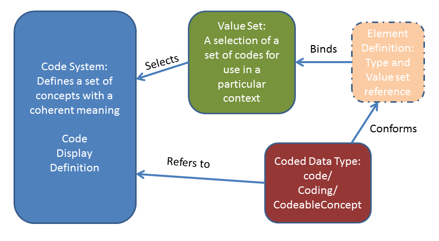

Current Build

 Terminology
TerminologyThe Terminology Module provides an overview and guide to the FHIR resources, operations, coded data types and externally-defined standard and FHIR-defined terminologies that are used for representing and communicating coded, structured data in the FHIR core specification and profiles. Collectively, these capabilities are used to provide the terminology service functionality required for supporting the use of coded data in FHIR resources throughout the specification as described in the other modules.
The terminology resources and their relationships are shown below:
|  |
The ElementDefinition type (shown with a dotted box) is described elsewhere in the specification in the Foundation and Conformance modules.
The Terminology Module covers the following:
Resources
Terminology Service
Operations
|
|
|
Coded Data Types
Documentation
For security considerations for terminology services, see the Terminology Service page Security section. For more general considerations, see the Security and Privacy module.
A subset of the terminology resources have been tested and are being used in production tooling, and as such have reached a maturity level where changes become less likely. These are:
Other resources are still under development:
Over the next 18 months, we will continue to advance the resources through the Maturity Levels through further development and testing. We anticipate more widespread implementation of NamingSystem, CodeSystem and ExpansionProfile and testing in Connectathons and with implementation experience.
Editor : Rob Hausam
© HL7.org 2011+. FHIR STU3 Candidate (v1.7.0-10082) generated on Thu, Oct 27, 2016 16:28+0000. QA Page
Links: Search  |
Version History |
Table of Contents |
Compare to DSTU2 |
|
Version History |
Table of Contents |
Compare to DSTU2 |
 |
Propose a change
|
Propose a change